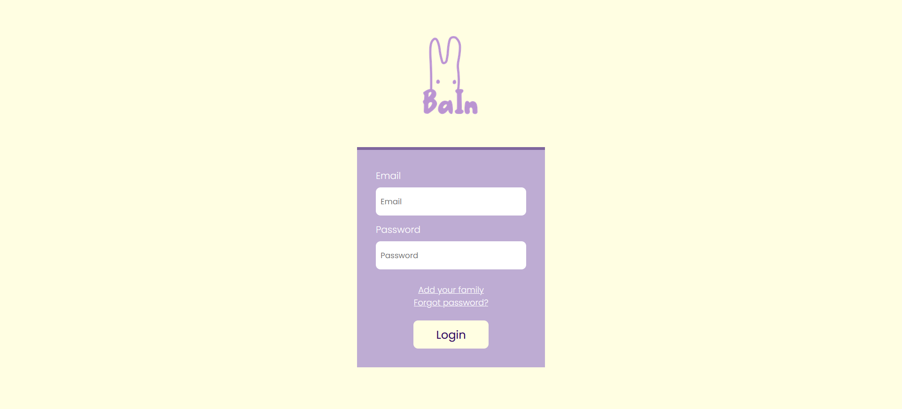

Baby Info Manager - Documentatie academica
Membrii echipei
- Giosu Ștefana-Elisa
- Melinte Daria Elena
- Tamaș Luca Ștefan
Afiliatie
- Facultatea de Informatica Iasi
1. Introducere
1.1 Scop
„Baby Info Manager” este o aplicație web care permite utilizatorilor autentificati gestiunea resurselor privitoare la ingrijirea unui copil. Aceasta documentatie va prezenta general prima versiune a produsului nostru.
1.2 Public tinta
Acest document este destinat profesorilor ce vor revizui calitatea și functionalitatea aplicației noastre, și va reprezenta o parte din nota finala pentru acest proiect.
1.3 Domeniul produsului
Produsul în curs de dezvoltare este o aplicație web care permite utilizatorilor autentificati gestiunea resurselor privitoare la ingrijirea unui copil. Vor putea vizualiza calendarul hranirii, al orelor de somn, diverse resurse multimedia privind evolutia copilului, istoricul medical, relationarea cu alți copii. Aplicația ofera de asemenea o vedere cronologica a celor mai importante momente surprinse referitoare la fiecare copil in parte, cu posibilitatea partajarii celor mai semnificative momente in cadrul unei aplicatii sociale. Publicul ținta vizat pentru aceasta aplicație sunt familiile de orice tip cu copii, de la bebelus si copil de varsta prescolara la puber.
2. Descrierea generala
2.1 Perspectiva produsului
Această aplicație este dezvoltată la solicitarea profesorilor noștri, fiind luata în considerare pentru nota finală la cursul „Tehnologii Web”.
Aplicația consista din 4 componente principale. Componenta de autentificare, unde utilizatorii se pot loga sau își pot crea cont. A doua componenta este pagina unde sunt prezentati toți copiii din familia utilizatorului. În continuare exista componenta pentru fiecare copil în parte de unde pot fi accesate toate functionalitatile mentionate. A patra componenta este contul privat al utilizatorului, unde pot vedea și edita informații despre ei și famili din care fac parte.
2.2 Functionalitatile produsului
Functionalitatile principale sunt structurate în așa fel încât aplicația să fie cât mai ușor de utilizat pentru toate categoriile de vârsta. După ce utilizatorul se logeaza, le va fi prezentata o lista cu copii din familia acestuia. Odată ce alege un copil, va fi prezentat cu toate obtiunile legate de acel copil: informații personale, calendarul hranirii, calendarul orelor de somn, resurse multimedia, istoricul medical și relationarea cu alți copii.
Un exemplu de flux pentru un client ar fi următorul:
- Login
- Alege un copil
- Alege calendarul hranirii
- Vizualizeaza o inregistrare
- Editeaza acea inregistrare
- Adauga o inregistrare noua
2.3 Clasele si caracteristicile utilizatorilor
Ne așteptam în mare parte ca aplicația noastră să fie folosită de familii tinere, cu câțiva copii, dar care vor implica și bunicii copiilor.
2.4 Mediul de operare
Aplicația va fi integrabilă pe mai multe platforme. Componentele vor fi scrise și proiectate în HTML5 + CSS pentru stil, în timp ce API-ul în sine va folosi NodeJS ca limbaj de programare principal. Pentru bazele de date vom folosi MongoDB. De asemenea, vom folosi GraphQL ca limbaj de interogare pentru API-urile noastre.
2.5 Constrangeri de proiectare si implementare
Proiectul are o gamă largă de constrângeri. În ceea ce privește designul, aplicația trebuie să fie intuitivă și ușor de utilizat de către orice utilizator, indiferent de capacitățile tehnice ale acestuia.
O altă constrângere se referă la securitatea datelor. Pe lângă datele personale ale fiecarui utilizator, aplicația va primi și informații despre copiii din familiile acestora, iar aceasta informatie trebuie să fie criptate și procesate corespunzător pentru a evita orice scurgere de date.
2.6 Documentatia utilizatorului
Aplicația noastră a fost proiectata pentru a fi intuitiva și ușor de utilizat. Astfel nu vom insista cu o documentatie redundanta. Cu toate acestea, vom oferi un videoclip demonstrativ cu produsul final, unde vom prezenta functionalitatile principale și modul de utilizare a acestora.
2.7 Ipoteze si dependente
Produsul nostru ofera o modalitate de stocare a informațiilor despre copii din familia utilizatorilor, astfel ne așteptam ca aceștia sa introduca informațiile necesare.
3. Cerinte de interfata externa
3.1 Interfete cu utilizatorul
Pagina de logare
Aceasta este prima pagină cu care interacționează clientul.
Lista copii
Odată logat, utilizatorul este redirectionat către o pagina cu lista copiilor din familia acestuia.
3.2 Interfete hardware
Pe partea partea utilizatorului, aplicația va rula pe orice browser desktop, cum ar fi Chrome, Opera, Edge, care acceptă HTML, CSS și Javascript. Pe backend, serviciile noastre API vor rula pe cloud și, ca atare, unele servicii cloud vor fi necesare pentru proiect. Protocoalele de comunicare (service client, server-server) utilizate vor fi TCP.
3.3 Interfete software
- Fonturi și pictograme Google (licență gratuită)
- Foi de stil CSS
- NodeJS libraries
- Visual Studio Code
3.4 Interfete de comunicare
După cum a fost menționat mai sus, comunicarea cu clientul va utiliza serviciile de mail existente.
Pentru comunicarea server-client, în ordine sa mentinem siguranța informatiilor, este recomandata utilizarea protocolului HTTPS.